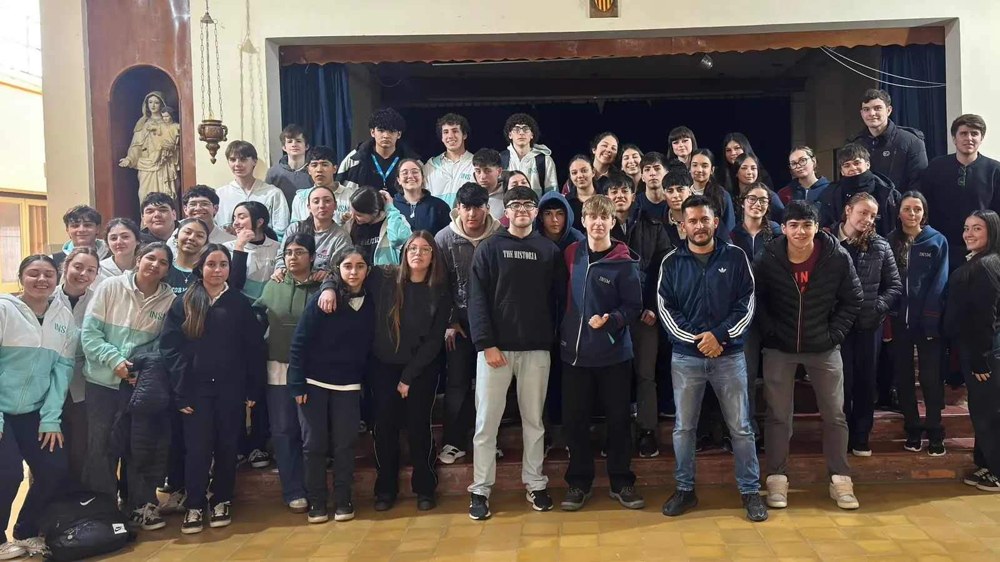

01
Informática
Programación, Robótica y Desarrollo de Software para el mundo digital.
Ver plan ↗
Una formación que combina saberes, proyectos y herramientas para el futuro.
El ciclo orientado permite profundizar en áreas específicas, desarrollando competencias para el futuro universitario y profesional.
Programación, Robótica y Desarrollo de Software para el mundo digital.
Ver plan ↗Ciencias Sociales, Comunicación y Ciudadanía con pensamiento crítico.
Ver plan ↗Experiencias que permiten investigar intereses, producir y trabajar colaborativamente.
Dos orientaciones para profundizar intereses, desarrollar nuevas herramientas y prepararte para tus próximos desafíos.
Conocé las materias de cada año, distinguí los espacios propios de cada orientación y descargá el plan de estudios completo.
Programación, robótica, desarrollo de software, sistemas digitales y comunicación audiovisual.
Ciencias sociales, comunicación, ciudadanía y pensamiento crítico para comprender la realidad y participar en ella.
El Nivel Secundario acompaña una etapa de mayor autonomía y profundización. La propuesta integra formación general con orientaciones que permiten construir recorridos diferentes.
Lengua y Literatura · Matemática · Ciencias Naturales · Ciencias Sociales · Inglés · Educación Física · Artes Visuales · Música · Tecnologías · Religión y ESI.
Los alumnos son agrupados según su conocimiento y manejo real de la lengua, permitiendo un avance más efectivo y personalizado.
La experiencia educativa también se construye en actividades, encuentros, proyectos y momentos compartidos.
El Nivel Secundario es un tiempo emocionante y enriquecedor. Acompañamos a los alumnos para convertirse en jóvenes innovadores, dinámicos, flexibles y resilientes, equipados para los desafíos del siglo XXI.
Gerardo Lemos
Mujeres: pollera gris largo a la rodilla, remera de piqué con escudo bordado, pullover escote en V azul bordado, abrigo azul, zapatos negros o zapatillas lisas y cabello recogido con cinta azul.
Varones: pantalón gris de vestir, remera de piqué con escudo bordado, pullover escote en V azul bordado, abrigo azul, medias azules y zapatos negros.
Gimnasia: joggin gris, remera oficial, buzo gris con escudo, zapatillas deportivas y bolsa de higiene completa.
Fotocopia del DNI del alumno y padres/tutores · Partida de nacimiento actualizada · Certificado de estudios del nivel anterior o constancia de alumno regular · Ficha de salud completada y firmada por un médico · Informe de libre deuda si proviene de gestión privada.
Podés consultar el Acuerdo Escolar de Convivencia, la reglamentación escolar y los acuerdos sobre evaluación y uso del celular.
Para consultas, inscripción o información institucional, podés comunicarte con el INSM.
Contacto ↗